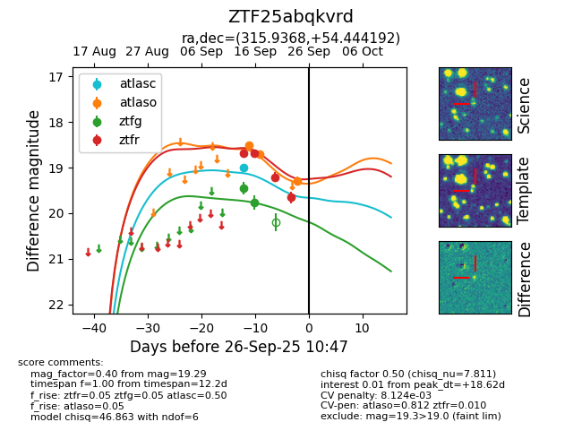
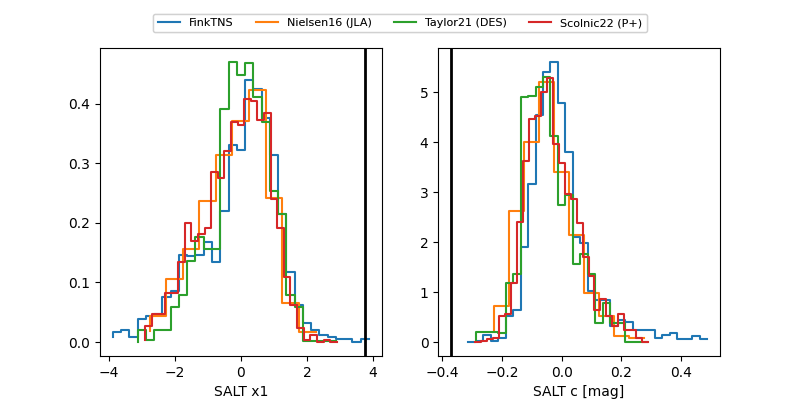

FINK: ZTF25abqkvrd
Lasair: ZTF25abqkvrd
ALeRCE: ZTF25abqkvrd
ZTF25abqkvrd (ztf,fink)
equatorial (ra, dec) = (315.9368,+54.44419)
galactic (l, b) = (93.6455,+5.07823)


last atlasc=19.00, atlaso=19.29, ztfg=19.76, ztfr=19.66
1 atlasc, 3 atlaso, 2 ztfg, 4 ztfr detections